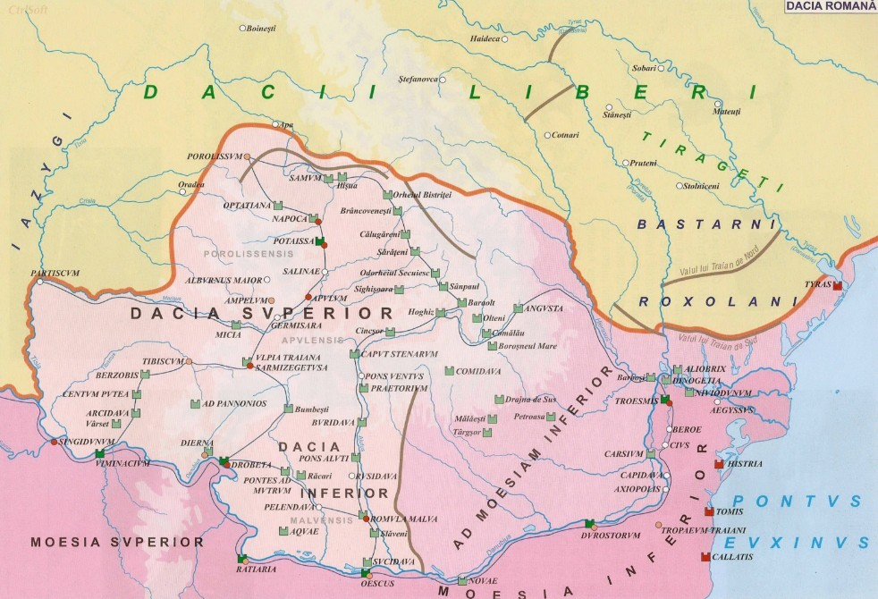

Etnogeneza românească

Romanitatea românilor reprezintă originea latină a poporului român și a limbii române.
Etnogeneza românească este procesul istoric de formare a poporului român și a limbii române.
Unde s-a format poporul român?
spațiul carpato-danubiano-pontic
Geto-dacii = unul și același popor; locuitori ai spațiului carpato-danubiano-pontic
Numiți geți de către greci - daci de către romani
Sec II – Dacia devine provincie romană în urma înfrângerii lui Decebal de către împăratul Traian în războaiele daco romane: 101-102;105-106

cuvinte de origine daco-romană (amurg, barză, buză, copil, gorun, prunc)
cuvinte de origine latină
- 10% din lexicul limbii române este format din neologisme

Poporul roman s-a format la nord de Dunare si in anumite zone din Peninsula Balcanica.
Romanizarea are loc in 3 etape
Este perioada primelor contacte dintre civilizația dacă și cea romană:contact material (comerț); spiritual; politic (implicarea lui Burebista în războiul de la Roma dintre Cezar și Pompei)
106-Dacia devine provincie a Imperiului Roman cucerita de catre Traian
Continua procesul de romanizare

- provinciilor Dacia și Dobrogea
- A reprezentat un factor esențial al romanizării care s-a realizat prin două căi:
• Colonizarea oficială (organizată de statul roman)
• Colonizarea populară (spontană)
- Romanii au menținut în Dacia o armată de 55.000 soldați
- Folosirea limbii latine este atestată de peste 3000 inscripții latine
- Promovarea Cultului Imperial și Extinderea Creștinismului